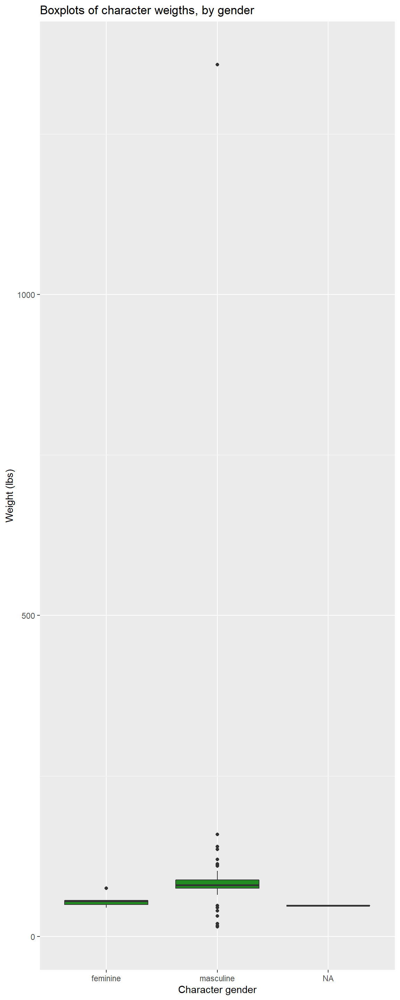

Biostatistics & Epi I, Lab 3 - GLHLTH 705
R Markdown file for Lab 3. Click link to download. Fill it in with your answers to the following lab tasks. When you’re ready to submit, name it as Lab3_FirstinitialYourlastname.Rmd, and submit it using the Sakai dropbox.
Excel document for Tables 1 & 2 TODO: Set up answer entry on Sakai?
Lab_3_kenya.rds - data file available on Sakai
Assess the bivariate relationships between outcome and covariables and the statistical association between the two variables
Estimate the epidemiologic measures of association (risk difference, risk ratio and odds ratio) between risk factors and outcome
For this assignment, we’ll need packages {tidyverse}, {skimr}, {epiR}, {tableone}, and {epiAssist}
For your data, you will use the dataset ‘Lab_3_kenya.rds’. This has all of the variables accumulated through Lab 2.
For this and subsequent labs, we are considering 1) Child mortality within 5 years as our outcome (response) variable
2) Birth order >= 5 as the main risk factor variable and
3) Other variables as potential confounders or modifiers of the relationship between mortality and birth order.
Fill in Table 1 with the descriptive statistics for maternal BMI and maternal age, overall and by levels of child mortality within 5 years. This table also includes statistical measures (T-test and Kruskal-Wallis) of the association between outcome and maternal BMI and age (i.e., comparing the distribution of maternal BMI for the children who died and those who were alive). Round p-values to 3 decimal places.
The skim() function provided by {skimr} makes this task a simple one. However, unlike previous labs where we ran a summary on the entire dataset, in this task we want individual variables.
We can use a pipe with skimr() to call specific variables, like this:
data %>%
skim(variable)
Since we’re already doing things in a pipe, we can use the filter function to retrieve summary statistics based on mortality status. To stratify by the variable death, we should add the group_by() function to our pipeline, specifying that we want to “group by death, then skim the variable mbmi”.
As a final note, you’ll notice that skim() doesn’t provide raw counts when we stratify by death. To get raw counts, run the same code, except replace the entire skim() function with count(). No arguments necessary.
T-tests and their nonparametric cousin, Kruskal-Wallis, can be used to compare means between sub-populations, with the null hypothesis (H0) being that all means are equal.
There are many functions in R that perform a specific task, while computing a p-value as a matter of course by applying the appropriate statistical test of significance (see Task 4).
However, there are a few simple functions from the {stats} package that we can use to manually run these tests. To implement, we use functions t.test() and kruskal.test(). Both take the same arguments:
depVar ~ indepVarIn this case, we are interested in knowing whether or not the means for mbmi and mage differ by strata of child mortality status, death.
What this means is that when we’re building our formula, the “y”/dependent variable (the resulting means), should be on the left, while the “x”/independent variable (a categorical stratifying variable), should be on the right.
As an example, we might use the starwars dataset, available in the {dplyr} package, to inspect the body mass of different characters by species:
| name | height | mass | hair_color | skin_color | eye_color | birth_year | sex | gender | homeworld | species |
|---|---|---|---|---|---|---|---|---|---|---|
| Luke Skywalker | 172 | 77 | blond | fair | blue | 19.0 | male | masculine | Tatooine | Human |
| C-3PO | 167 | 75 | NA | gold | yellow | 112.0 | none | masculine | Tatooine | Droid |
| R2-D2 | 96 | 32 | NA | white, blue | red | 33.0 | none | masculine | Naboo | Droid |
| Darth Vader | 202 | 136 | none | white | yellow | 41.9 | male | masculine | Tatooine | Human |
| Leia Organa | 150 | 49 | brown | light | brown | 19.0 | female | feminine | Alderaan | Human |
| Owen Lars | 178 | 120 | brown, grey | light | blue | 52.0 | male | masculine | Tatooine | Human |
Our formal question we’d like to answer might be: “Does mean character height differ by a character’s gender?”
We can calculate summary statistics for sub-group frequency counts and means:
| gender | n | mean |
|---|---|---|
| feminine | 17 | 164.6875 |
| masculine | 66 | 176.5161 |
Our T test would effectively tell us whether or not those means are statistically different from each other given the available data:
t.test(height ~ gender, data = starwars)
#> Welch Two Sample t-test
#>
#> data: height by gender
#> t = -1.5596, df = 37.315, p-value = 0.1273
#> alternative hypothesis: true difference in means between group feminine and group masculine #> is not equal to 0
#> 95 percent confidence interval:
#> -27.191682 3.534423
#> sample estimates:
#> mean in group feminine mean in group masculine
#> 164.6875 176.5161
However, since our group for gender == feminine only contains 17 observations, so we might decide that a nonparametric test (one that doesn’t assume a normal distribution), might be more appropriate for the small sample size. In this case we can use the Kruskal-Wallis test:
kruskal.test(height ~ gender, data = starwars)
#> Kruskal-Wallis rank sum test
#>
#> data: height by gender
#> Kruskal-Wallis chi-squared = 8.6845, df = 1, p-value = 0.003209
Notice the difference in the conclusion you would draw from either test. For the T-test, we should conclude that we cannot reject the null hypothesis, whereas the nonparametric test tells us that there is a statistically significant difference in the mean height of the two groups.
Fill in Table 2 with the frequency counts and COLUMN percentages for All Subjects and ROW percentages for the proportions alive and dead for the levels of the categorical variables listed in the table, again overall and by levels of child mortality within 5 years. Calculate percentages only for the non-missing values. Round percentages to 1 decimal place. This table also includes statistical measures (Chi-Sq and Fisher’s exact test) of the association between child dead/alive and the variables in the table. Round p-values to 3 decimal places.
We will complete this task by first using the package called {tableone}, a powerful tool for tabular analysis, especially for a stratified analyses like this one.
A {tableone} object will generate mean and standard deviation for continuous variables, and frequency counts and percentages for variables that we designate as “factorVars” (categorical).
The primary function in this package is called CreateTableOne(), which has several arguments of central importance for it to run:
1.) vars = - a vector of variable names, written as strings
2.) strata = - a categorical variable for stratifying (if desired)
3.) data = - your data frame
4.) factorVars = - used to convert character variables to factors on the fly
For starters, we’ll need a vectorized list of our variables of interest, written as strings (in quotes).
As an example, we might use the derived variables in our kenya dataset for size and pnc. To make our code more readable, we will create a vector object that contains both variable names. To do this, we put both variable names in quotes, separating them by commas within a vector, c(). Then we need to assign the vector a name so that we can call it later. Here, we’ve named the vector variables.
variables <- c('size', 'pnc')
For a simple table of summary statistics, we only need to use arguments vars = and data =. It’s best practice to assign the {tableone} object to a name, so that we can use it in a print function in a moment.
simple_tab <- CreateTableOne(vars = variables,
data = kenya)
We may also want to stratify our results by a second variable, like bord5.
stratified_tab <- CreateTableOne(vars = variables,
data = kenya,
strata = 'bord5')
We can then use a print() function, with arguments specific to our {tableone} object, to view our simple and stratified tables.
With categorical variables, it’s typically best to use the argument showAllLevels = TRUE so that we see every level of our categorical variables. Setting showAllLevels to FALSE will leave out the referent level for each variable.
print(simple_tab, showAllLevels = TRUE)
#> level Overall
#> n 16828
#> size (%) Very large 26 ( 7.4)
#> Larger than average 76 (21.7)
#> Average 158 (45.1)
#> Smaller than average 65 (18.6)
#> Very small 25 ( 7.1)
#> pnc (%) No prenatal care 15 ( 9.1)
#> Received prenatal care 149 (90.9)
Whereas the simple table prints overall frequency counts and percentages, our stratified table will take the stratifying variable, and perform a chi-squared test to for differences between the various groups:
print(stratified_tab, showAllLevels = TRUE)
#> Stratified by bord5
#> level 1-4 in Birth Order 5+ in Birth Order p test
#> n 13263 3565
#> size (%) Very large 23 ( 9.3) 3 ( 2.9) 0.157
#> Larger than average 51 (20.6) 25 (24.5)
#> Average 108 (43.5) 50 (49.0)
#> Smaller than average 50 (20.2) 15 (14.7)
#> Very small 16 ( 6.5) 9 ( 8.8)
#> pnc (%) No prenatal care 4 ( 3.7) 11 (20.0) 0.002
#> Received prenatal care 105 (96.3) 44 (80.0)
Note that each row of the stratified results sum to the same result as given by the column for “Overall” in our simple_tab.
As the default for categorical variables, the {tableone} print() function performs a chi-squared test on the difference of proportions between the different strata for bord5.
There’s one glaring issue here, however: neither of our stratified variables meet the assumption of normality! Each contains at least one cross-tabulation with counts that are less than 5.
When we look at our decision tree for hypothesis testing, we notice that we need to use a Fisher’s Exact test when our data doesn’t meet the assumption of normality necessary for a Chi-squared test of significance.
To do this in a {tableone} object, we just need to include exact = TRUE in our print() function to calculate a Fisher’s Exact test, the nonparametric equivalent of the Chi-square test.
print(stratified_tab, showAllLevels = TRUE, exact = TRUE)
#> Stratified by bord5
#> level 1-4 in Birth Order 5+ in Birth Order p test
#> n 13263 3565
#> size (%) Very large 23 ( 9.3) 3 ( 2.9) 0.141 exact
#> Larger than average 51 (20.6) 25 (24.5)
#> Average 108 (43.5) 50 (49.0)
#> Smaller than average 50 (20.2) 15 (14.7)
#> Very small 16 ( 6.5) 9 ( 8.8)
#> pnc (%) No prenatal care 4 ( 3.7) 11 (20.0) 0.001 exact
#> Received prenatal care 105 (96.3) 44 (80.0)
Although in this particualr interest we draw the same conclusions from the Fisher’s exact test as we do from the Chi-square test, assuming normality when the evidence doesn’t exist in the data can lead to misleading results further down the line.
Fill in Table 3 with frequency counts overall and by levels of child mortality within 5 years and with the stratum-specific risk of death, the risk difference, risk ratio and the odds ratio of death comparing levels for each of the 5 variables to the reference group. The reference group for each variable is noted. For the two 3-level variables, calculate risk differences and ratios for each non-referent level relative to the reference group. Round risks to 3 decimal places and ratios to 2 decimal places. The STATA cs command provides a convenient way to produce the data for this table.
Don’t let this table overwhelm you. We’re going to break it down step-by-step
The frequency counts in this table align with those generated for Table 2.
The value for risk also aligns with that generated in the previous task, except that in Table 2 you reported it as a percentage. Risk should be reported as a proportion, rounding to the third decimal.
RD, RR, and OR are what are known as “measures of association” because they are used to compare outcomes between levels of a categorical variable. In epidemiology, we refer to the baseline variable as the “Referent variable” and the comparator variable as the “Index variable”.
In practical terms, for things like RRs and ORs, the index variable goes in the numerator and the referent variable goes in the denominator.
We can use our underlying knowledge of these measures of association to calculate our answers by hand and confirm the results that we’ll obtain using the functions that follow.
mAssoc() for Measures of AssociationFor this task, we will use mAssoc(), which generates all three measures of association in a singular output.
To use mAssoc(), we need to take several steps to ensure that our data is in the proper shape for our measures to be calculated appropriately:
1.) Create a table object using table()
2.) Rearrange the table with flipTable() to put it in the appropriate alignment for use by mAssoc()
3.) Submit our rearranged table to mAssoc().
As a way of demonstrating, we will use the variable bord5, stratified by death to calculate our measures of association.
table()The first step is fairly straightforward. We need to generate a table object and assign it a name. Keep in mind that we want our exposure variable (in this case, bord5) along the left side of the table and our outcome variable (death) at the top of the table.
tab_bord5 <- table(kenya$bord5, kenya$death)
tab_bord5
#> Alive Dead
#> 1-4 in Birth Order 11809 1454
#> 5+ in Birth Order 3002 563
flipTable()mAssoc() comes from the package {epiAssist}. The main argument it takes is a 2x2 table object (or a stratified 2x2 table object) in the following format, with the cross-tabulation of outcome of interest (Outcome +) and exposure of interest (Expose +) in the top-left cell:
# ----------- ---------- ----------
# Outcome + Outcome -
# ----------- ---------- ----------
# Expose + cell 1 cell 3
# Expose - cell 2 cell 4
# ----------- ---------- ----------
If we refer back to our table for bord5 and death, we’ll notice that it currently displays the inverse:
tab_bord5
#> Alive Dead
#> 1-4 in Birth Order 11809 1454
#> 5+ in Birth Order 3002 563
To fix this, we can use flipTable(), and assign it back to the same name for the table object:
tab_bord5 <- flipTable(tab_bord5)
tab_bord5
#> Dead Alive
#> 5+ in Birth Order 563 3002
#> 1-4 in Birth Order 1454 11809
mAssoc()To generate our measures of association and their accompanying confidence intervals, all we need to do is submit our rearranged table to mAssoc(), specifying that our data is cohort data with method = "cohort.count", and setting our confidence level to 0.95 with conf.level = .95:
mAssoc(tab_bord5, method = "cohort.count", conf.level = 0.95)
#> MEASURES OF ASSOCIATION FOR: 5+ in Birth Order (index) vs. 1-4 in Birth Order (referent)
#> Point estimates and 95% CIs:
#> -------------------------------------------------------------------
#> Inc risk ratio 1.44 (1.32, 1.58)
#> Odds ratio 1.52 (1.37, 1.69)
#> Attrib risk in the exposed * 0.05 (0.04, 0.06)
#> Attrib fraction in the exposed (%) 30.58 (24.05, 36.56)
#> Attrib risk in the population * 0.01 (0.00, 0.02)
#> Attrib fraction in the population (%) 8.54 (6.20, 10.82)
#> -------------------------------------------------------------------
#> Uncorrected chi2 test that OR = 1: chi2(1) = 62.125 Pr>chi2 = <0.001
#> Fisher exact test that OR = 1: Pr>chi2 = <0.001
#> Wald confidence limits
#> CI: confidence interval
#> * Outcomes per population unit
Here is a quick guide to the components of the output relevant to this activity:
Inc risk ratio: Our basic risk ratio
Odds ratio: Our basic odds ratio
Attrib risk in the exposed: The risk difference. mAssoc() takes another argument, units =, which by default is set to 1. This regulates our output for the measure of risk difference.
mAssoc() when exposure variable has 3+ levelsNow that you’ve seen the code for bord5 as an example, if you’re paying close attention, you may have started to wonder, “But what about for variables like education, when there’s more than one index variable?”
Good news: flipTable() and mAssoc() are designed to handle exposure variables with any number of levels. This means that the steps you take for bord5, male, and rural will also apply to magec and education, simple as that.
Running mAssoc() when your exposure variable has 2+ levels will render multiple outputs for each respective index variable. The person who wrote this function was even nice enough to label each of those levels and whether or not they are the index or the referent level.
Generate side-by-side boxplots of maternal BMI (mbmi) and maternal age (magec) by levels of child mortality (death).
For this activity, we need boxplots that plot continuous variables based on child mortality. In ggplot2, we can stratify boxplots by using a second categorical variable when we specify our aesthetics (aes()). In other words, if you put mbmi on the y-axis, you can put death as the variable on the x-axis.
Additionally, don’t forget to label your axes, give the plot a title, and save it using ggsave()
Here’s an example of what we are looking for, using the starwars dataset. We’ve adjusted the dimensions a bit to accommodate our lone outlier. Care to guess who it is?
